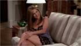
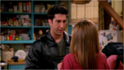

- s04e1- "The One With The Jellyfish"
Ross falls asleep while reading Rachel's 18-page letter. When confronted by her, he pretends to agree with what she wrote. Monica gets stung by a jellyfish and must resort to drastic measures.
- s04e2 - "The One With The Cat"
Phoebe believes her adoptive mother's spirit inhabits a stray cat. Joey finds the experience of selling his entertainment center not entertaining at all. Monica finally gets to date the big man on her high school campus.
- s04e3 - "The One With The Cuffs"
Monica "pulls a Monica" when she caters her mother's party. Chandler gets himself locked into a compromising position with Rachel's boss.
- s04e4 - "The One With The Ballroom Dancing"
The girls get an eviction notice and Joey comes to their rescue by agreeing to give the building superintendent dancing lessons.
- s04e5 - "The One With Joey's New Girlfriend"
Ross and Rachel continue their power games to make each other jealous. Chandler falls hard for Joey's new girlfriend Kathy.
- s04e6 - "The One With The Dirty Girl"
Ross's beautiful new girlfriend has a disgusting secret. Chandler gets closer to Kathy and buys her a pricey birthday gift. Rachel proudly completes a crossword puzzle without help.
- s04e7 - "The One Where Chandler Crosses The Line"
Chandler kisses Kathy after thinking Joey has lost interest in her. Encouraged by an awed Phoebe, Ross debuts his keyboard "sound" in public.
- s04e8 - "The One With Chandler In A Box"
Still angry over the Kathy kiss, Joey punishes Chandler by shutting him in a box on Thanksgiving. Monica gets a surprise when she visits the eye doctor.
- s04e9 - "The One Where They're Going To Party"
When the guys try to be wild and crazy, they reluctantly realize they'd rather act like adults. Monica writes a scathing restaurant review - and gets a job offer as a result.
- s04e10 - "The One With The Girl From Poughkeepsie"
Ross debates whether to date a faraway beauty or a less desirable woman who lives nearby. Chandler tries to set up a date for Rachel with some co-workers.
- s04e11 - "The One With Phoebe's Uterus"
Phoebe's half-brother Frank Jr. returns with exciting news - and asks a huge favor of Phoebe. Ross gets Joey a job as a museum tour guide.
- s04e12 - "The One With The Embryos"
Phoebe's uterus is put to the ultimate test. A seemingly harmless game between the guys and the girls escalates into a full-blown contest to see which pair knows more personal data about the other.
- s04e13 - "The One With Rachel's Crush"
Rachel schemes to get a handsome client to ask her on a date. Chandler's jealousy causes problems with his girlfriend.
- s04e14 - "The One With Joey's Dirty Day"
On Joey's first day on a major movie, one of Hollywood's legendary stars finds him in a compromising position in his trailer. Rachel regrets asking Ross for a favor when it sparks a new romance.
- s04e15 - "The One With All The Rugby"
Chandler's abrasive ex-girlfriend Janice reappears. Monica finds a mysterious switch in Joey and Chandler's old apartment. Ross tries to impress Emily by playing rugby.
- s04e16 - "The One With The Fake Party"

To become better acquainted with her crush Joshua, Rachel inadvertently thwarts Ross's plans. Phoebe's pregnancy cravings evoke a sympathetic response from Joey.
- s04e17 - "The One With The Free Porn"
Chandler and Joey are glued to their TV after discovering an unscrambled adult cable channel. Monica helps Ross tell his girlfriend he loves her. Phoebe gets some surprising pregnancy news.
- s04e18 - "The One With Rachel's New Dress" 
Rachel takes a provocative pose to get Joshua into a romantic mood - but her plans go awry. Chandler and Joey are at odds to persuade Phoebe to name one of her triplets after them.
- s04e19 - "The One With All The Haste"
Drastic developments blight Ross's relationship with Emily. Monica and Rachel try to win back their old apartment, much to Chandler and Joey's delight.
- s04e20 - "The One With All The Wedding Dresses"
Distraught over Ross's engagement, Rachel takes Joshua aside and suggests they also get married. Chandler forces Joey to go to a sleep clinic to stop his loud snoring. Monica and Phoebe get obsessed to wedding dresses after trying on Emily's wedding dress.
- s04e21 - "The One With The Invitation"
Rachel and Ross each reminisce about when they used to date each other. Everyone is disappointed when Rachel decides not to attend the wedding in England.
- s04e22 - "The One With The Worst Best Man Ever"

When Joey's duck swallows Ross' wedding ring, he is worried he'll have to sacrifice his beloved fowl to retrieve it.
- s04e23 - "The One With Ross's Wedding, Part 1" 
Ross tries to encourage Rachel to come to his wedding. Arriving in London, Joey and Chandler go sightseeing but Joey's overly enthusiastic behavior compels Chandler to go off on his own.
- s04e24 - "The One With Ross's Wedding, Part 2"
Back in New York, Rachel realizes her feelings for Ross are stronger than ever and rushes off to the airport as wedding time nears. After a drunken guest mistakes Monica for Ross's mother, She and Chandler console each other and start their romantic journey.